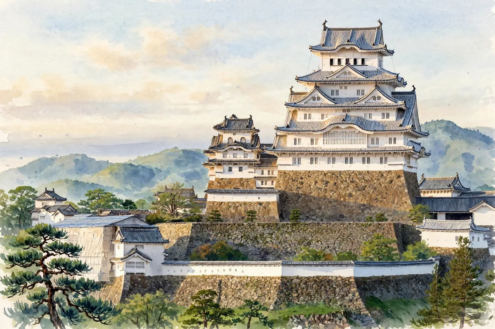

兵庫県初の金箔瓦を初公開――姫路市埋蔵文化財センター「TOYOTOMI IMPACT」展、12月20日まで

城と神社にまつわる新しい動きをお伝えするニュース記事です。出典は神戸新聞NEXT（2026年11月7日）と、姫路市埋蔵文化財センターの公式案内です。姫路市埋蔵文化財センター（兵庫県姫路市四郷町坂元）で、秋季企画展「TOYOTOMI IMPACT―羽柴・木下期姫路城研究の新地平―」が開かれています。羽柴秀吉ら豊臣一族が治めた姫路城や城下町をテーマにした企画展で、秀吉の弟・秀長が主人公のNHK大河ドラマ「豊臣兄弟！」の放送に合わせて企画されました。会期は2026年10月4日（日）から12月20日（日）までです。
見どころは、兵庫県内で初めて発見され、今回が初公開となる金箔瓦です。2025年度の発掘調査で、播磨国総社（姫路市総社本町）南東の城下町跡から瓦の下半分が出土し、光学顕微鏡でわずかに金箔が残っていることが分かりました。金箔瓦は権力のシンボルとされるものですが、江戸時代末期の土器と一緒に出てきたため、秀吉が城主だったころの瓦とは断定できないと、神戸新聞は伝えています。金箔瓦を含め、出土品177点が並びます。
昭和の大修理（1956～64年）で見つかった瓦は、地層の深さの記録により、秀吉の築城時とされる6点を特定できました。「秀吉の瓦」は、秀吉が「質よりも量」で焼かせたと推察されるということです。秀吉時代の石垣の構造なども紹介され、瓦を含め研究結果を詳細に解説した図録（税込み600円）も販売しています。
城の検定では、姫路城は国宝・世界遺産の現存天守であることを押さえましょう。羽柴秀吉が1580年（天正8年）に城を築き、のちに池田輝政が大改修して現在の白亜の天守群が生まれました。瓦や石垣といった出土品から、城の歴史を読み解く――考古学の視点も、城を知るうえで大切な手がかりです。関連記事「姫路城400年の歩み｜戦火を逃れ、世界遺産になった理由」もあわせてどうぞ。
会期は2026年12月20日（日）まで、午前10時～午後5時（入館は午後4時30分まで）で、入館は無料です。休館日は毎週月曜日（祝日の場合は開館）と祝日の翌日（土曜日・日曜日の場合は開館）です。展示説明会は11月14日（土）と12月19日（土）に行われます（無料・予約不要）。出かける前に、姫路市埋蔵文化財センターの公式サイトで最新の案内を確認してください。このサイトのイベント予定表でも、会期を案内しています。
天守つるぎから一言：金箔の瓦が、城下町の地層から出てきた――。秀吉の姫路城を、瓦と石垣から読み解く企画展。初公開の金箔瓦、ぜひこの目で確かめたいね。
城と神社のニュースや検定の情報は、公式SNSでもお知らせしています。InstagramとThreadsの @tabi.kentei をフォローして、最新情報をチェックしてください。
このテーマの柱ページ：城と神社のイベント予定表｜これからの行事と特別公開
同じテーマの記事：
この記事のおすすめ本

表紙イメージ（実際の表紙とは異なります）
PR ガイド・スタンプ帳
日本100名城に行こう 公式スタンプ帳つき
著者：公益財団法人 日本城郭協会
日本100名城の公式ガイドブック。1城1ページで見どころを解説し、巻末がそのまま公式スタンプ帳になります。スタンプラリーを始めるならまずこの一冊。
Amazonで見る価格はAmazonでご確認ください／リンク先：Amazon.co.jp

表紙イメージ（実際の表紙とは異なります）
PR ガイド・スタンプ帳
日本100名城と続日本100名城に行こう 公式スタンプ帳つき
著者：公益財団法人 日本城郭協会
100名城と続100名城、あわせて200城を一冊に収録した合本版。すでに100名城を巡り始めた人が、続編までまとめて持ち歩きたいときに便利です。
Amazonで見る価格はAmazonでご確認ください／リンク先：Amazon.co.jp

表紙イメージ（実際の表紙とは異なります）
PR ビジュアルガイド
行った気になる！すごい名城 日本の城50
著者：香川元太郎・小和田哲男
日本各地から50の名城を、大迫力の写真と精密イラストで解説。次の城めぐりの行き先選びにも、自宅で眺めて楽しむ画報としても使えます。
Amazonで見るKindle版あり／価格はAmazonでご確認ください／リンク先：Amazon.co.jp
当サイトは、Amazon.co.jpを宣伝しリンクすることによってサイトが紹介料を獲得できる手段を提供することを目的に設定されたアフィリエイトプログラムである、Amazonアソシエイト・プログラムの参加者です。価格・在庫はリンク先でご確認ください。